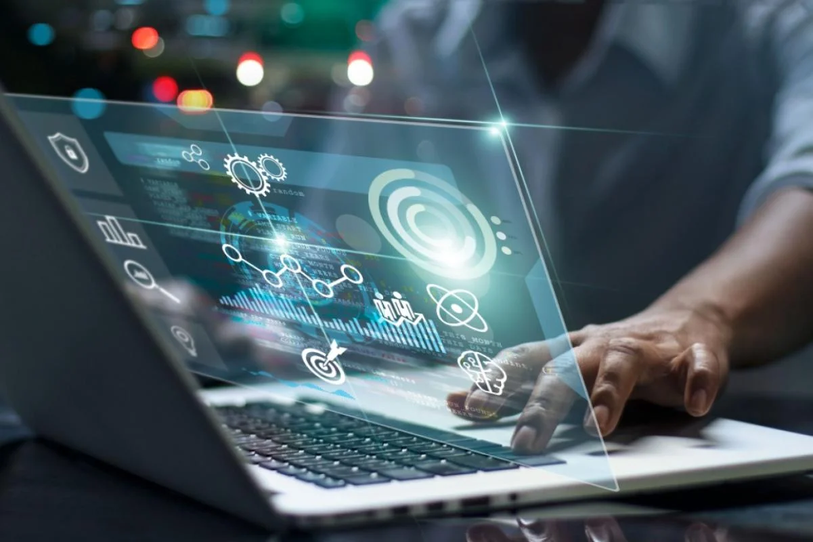
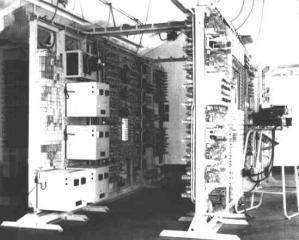

questo è la capitolo1
cos'è l'informatica:
la scienza>
la storia>
aspetti posetivi>
aspetti negativi>
comportamento in rete >

Definizione: L'informatica è lo studio dei processi che riguar
dano la raccolta, l'elaborazione, I'archiviazione e la trasmissione delle informazioni.
Campi di studio:
1)Algorit
mi e strutture dati.
2)Programmazione
3)Intelligenza artificiale.
4)Sistemi operativi e reti
Ruolo nella società: L'informatica è fondamentale in settori come l'economia, la medicina, l'ingegneria e l'istruzione.

Origini: L'informatica moderna nasce nel XX secolo, ma le basi si possono ritrovare in macchine come il telescopio meccanico di Charles Babbage o i lavori di Alan Turing,
Primi computer:
ENIAC (1945)
Primo computer elettronico ( SUNIVAC (1951), primo computer commerciale
Evoluzione:
Dagli enormi computer mainframe degli anni '60, ai personal computer negli anni '80, fino alla rivoluzione del cloud computing e dei dispositivi mobili.
aspetti positivi della tecnologia:

ACESSO ALL'INFORMATICA:
Internet permette di accedere a conoscenze e risorse ovunque ci si trovi.
AUTOMAZIONE:
Migliora l'efficienza produttiva in vari settori (industrie, sanità, educazione).
COMUNICAZIONE GLOBALE:
Le tecnologie informatiche hanno reso la comunicazione istantanea e a basso costo.
INNOVAZIONE:
La tecnologia permette la creazione di nuovi strumenti e soluzioni per problemi complessi

Dipendenza e isolamento: L'eccessivo uso della tecnologia può portare a isolamento sociale e dipendenza da dispositivi.
Cybercriminalità: L'uso illecito della tecnologia ha portato a una crescita dei crimini informatici (furto di dati, phishing, malware).
Perdita di privacy: I social network e i servizi online spesso raccolgono grandi quantità di dati personali.
Impatto ambientale: La produzione e lo smaltimento dei dispositivi elettronici ha un significativo impatto ecologico.
comportamento in rete:

Netiquette: ll comportamento corretto online, che include rispetto per gli altri, evitare comportamenti offensivi e seguire le norme di buone maniere digitali.
Sicurezza informatica: Utilizzare password sicure, non condividere informazioni personali e fare attenzione alle truffe online.
Responsabilità digitale: Essere consapevoli delle conseguenze delle proprie azioni online, dalla diffusione di fake news alla condivisione di contenuti illegali.
Rispetto della privacy altrui: Non violare la privacy di altri utenti e rispettare le leggi sulla protezione dei dati.
vai alla pagina indice
vai alla pagina copertina
vai alla pagina capitolo2
vai alla copertina